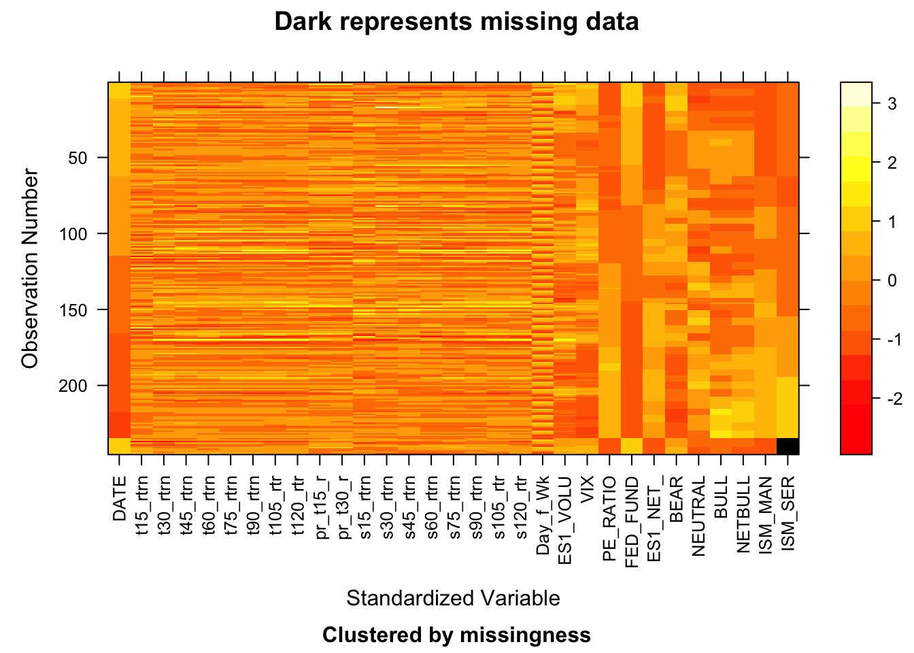

Chapter 3 Data
3.1 Sources
The data we need for our study is available in Bloomberg Terminal Application, accessible in Columbia University’s Library Bloomberg Terminal. Phillip Kim spent a morning at the library, and used the export Data function for each of the data items listed below and their respective Bloomberg functions. The exported data is then saved into individual worksheets within an Excel workbook named “bloomberg Data PK.xlsx”
The primary hurdle that we faced in data collection was realizing that the intraday pricing history for the SP500 futures was only trailing one year from the download date. That will limit our dependent variable of each day’s closing returns to only one year of data.
3.1.1 E-mini Futures
Bloomberg identifier: ES1 Index Fields: Price (LAST_PRICE) and Volume (VOLUME) Details: Choose 15 minute pricing interval going as far back as possible. This returns us data from 10/17/2021 18:00 to 11/1/2022 10:15am, a total of 23585 rows.
3.1.2 Net Positioning
Bloomberg identifier: IMMOENCN Index Fields: LAST_PRICE Details: This net positioning data is a weekly series of non-commercial net-positioning against our SP500 futures. We downloaded 669 rows of data since 1/31/2010, but since our data starts 10/17/2021 we’ll only use about 53 weeks of data.
3.1.3 Market Valuation
Bloomberg Identifier: SPX Index Fields: PE_RATIO Details: P/E ratio data is daily, and we downloaded data all the way back to 2010 (3230 rows). Since our pricing data starts 10/17/2021, we’ll only use 259 rows of data.
3.1.4 Market Volatility
Bloomberg Identifier: VIX Index Fields: LAST_PRICE Details: The VIX index is a daily series, and we downloaded data all the way back to 2010 (3234 rows). Since our pricing data starts 10/17/2021, we’ll only use 263 rows of data.
3.1.5 Investor Sentiment
Bloomberg Identifier: AAIIBEAR Index and AAIIBULL Index Fields: LAST_PRICE Details: AAII’s sentiment index is a weekly survey, and while we plan to use a “Net Bull” sentiment (Bull Sentiment - Bear Sentiment) we must download them individually. We downloaded 668 rows of weekly data since 2010, and will use 54 rows to cover the 1 year of return pricing data.
3.2 Cleaning / transformation
Since all of the data collected comes from Bloomberg, the data is already structured and doesn’t require a lot of cleaning. After the export and download into a single excel workbook, we performed two phases of transformation:
3.2.1 Creating return series
Our futures data comes in the form of prices at each 15 minute interval. We captured critical interval prices, and created a daily return series that measures various time-to-close (t-15min, 30, 45, 60, 75, 90, 105 to 120min) ranging from t-15min to t-120min. In addition, we also created a daily return series measuring the open-to-t-15min and open-to-30min, as we’ll explore the day-of-return as independent variables.
Finally, each of these return series is transformed into columns assigned to each day, such that for each day, we have returns of t-15-to-close, t-30-to-close, etc.
3.3 Missing value analysis
The data sets that we’ve chosen are all highly structured pricing, transaction, or survey data that have no missing data. All the pricing and market data, takes the latest date available. The only data point missing is the latest data for ISM/Services because the latest point wasn’t released.
